# Cargar librerías necesarias
suppressPackageStartupMessages({
library(tidyverse)
library(car) # Para Box-Cox y diagnósticos
library(MASS) # Para datasets y transformaciones
library(forecast) # Para Box-Cox
library(corrplot) # Para matrices de correlación
library(gridExtra) # Para múltiples gráficos
library(GGally) # Para gráficos de pares
library(knitr) # Para tablas
library(caret) # Para encoding de variables
})
set.seed(123)Laboratorio 3: Ingeniería de Características - Transformaciones e Interacciones
Modelos Estadísticos de Predicción
Objetivos del Laboratorio
Al finalizar este laboratorio, serás capaz de:
- Diagnosticar problemas que requieren transformaciones de variables
- Aplicar transformaciones clásicas (logarítmica, potencial, inversa) y avanzadas (Box-Cox, Yeo-Johnson)
- Interpretar modelos con variables transformadas
- Codificar variables categóricas usando técnicas apropiadas
- Crear e interpretar términos de interacción entre variables
- Realizar ingeniería de características avanzada mediante combinaciones y ratios
Configuración Inicial
Parte 1: Diagnóstico de Problemas en los Datos
Identificación de Problemas Comunes
# Crear dataset con múltiples problemas para diagnóstico
n <- 200
# Generar variables con diferentes problemas
x1 <- runif(n, 1, 100) # Variable normal
x2 <- exp(rnorm(n, 2, 0.5)) # Variable con distribución log-normal (asimétrica)
x3 <- rbeta(n, 0.5, 2) * 100 # Variable con valores entre 0-100, asimétrica
x4 <- sample(c("A", "B", "C"), n, replace = TRUE, prob = c(0.5, 0.3, 0.2))
# Variable respuesta con diferentes relaciones
y_linear <- 50 + 2*x1 + rnorm(n, 0, 10) # Relación lineal simple
y_log <- 10 + 3*log(x1) + rnorm(n, 0, 5) # Relación logarítmica
y_power <- 5*x1^0.5 + rnorm(n, 0, 8) # Relación de potencia
y_hetero <- 30 + 0.5*x2 + x2*rnorm(n, 0, 0.1) # Heterocedasticidad
# Crear dataset de diagnóstico
datos_diagnostico <- data.frame(
x1 = x1, x2 = x2, x3 = x3, x4 = x4,
y_linear = y_linear, y_log = y_log,
y_power = y_power, y_hetero = y_hetero
)
# Resumen estadístico inicial
summary(datos_diagnostico) x1 x2 x3 x4
Min. : 1.062 Min. : 2.647 Min. : 0.00065 Length:200
1st Qu.:27.940 1st Qu.: 5.424 1st Qu.: 2.80451 Class :character
Median :48.728 Median : 7.100 Median :12.45256 Mode :character
Mean :51.133 Mean : 8.390 Mean :20.13455
3rd Qu.:73.604 3rd Qu.:10.027 3rd Qu.:31.17041
Max. :99.433 Max. :37.357 Max. :93.60517
y_linear y_log y_power y_hetero
Min. : 43.69 Min. : 3.871 Min. :-6.751 Min. :31.01
1st Qu.:106.32 1st Qu.:17.842 1st Qu.:24.849 1st Qu.:32.54
Median :150.79 Median :21.473 Median :34.930 Median :33.50
Mean :153.16 Mean :21.271 Mean :33.935 Mean :34.32
3rd Qu.:196.18 3rd Qu.:23.956 3rd Qu.:43.177 3rd Qu.:35.17
Max. :263.54 Max. :37.360 Max. :65.396 Max. :53.78 Análisis Visual de Problemas
# Función para crear gráficos de diagnóstico
crear_diagnosticos <- function(x, y, titulo) {
df <- data.frame(x = x, y = y)
p1 <- ggplot(df, aes(x = x, y = y)) +
geom_point(alpha = 0.6) +
geom_smooth(method = "lm", se = FALSE, color = "red") +
geom_smooth(se = FALSE, color = "blue") +
labs(title = paste("Scatter:", titulo), x = "X", y = "Y") +
theme_minimal()
# Residuos del modelo lineal
modelo <- lm(y ~ x)
residuos <- residuals(modelo)
ajustados <- fitted(modelo)
p2 <- ggplot(data.frame(ajustados = ajustados, residuos = residuos),
aes(x = ajustados, y = residuos)) +
geom_point(alpha = 0.6) +
geom_hline(yintercept = 0, color = "red", linetype = "dashed") +
geom_smooth(se = FALSE, color = "blue") +
labs(title = paste("Residuos:", titulo),
x = "Valores Ajustados", y = "Residuos") +
theme_minimal()
return(list(scatter = p1, residuos = p2))
}
# Diagnósticos para diferentes relaciones
diag_linear <- crear_diagnosticos(datos_diagnostico$x1, datos_diagnostico$y_linear, "Relación Lineal")
diag_log <- crear_diagnosticos(datos_diagnostico$x1, datos_diagnostico$y_log, "Relación Logarítmica")
diag_power <- crear_diagnosticos(datos_diagnostico$x1, datos_diagnostico$y_power, "Relación de Potencia")
diag_hetero <- crear_diagnosticos(datos_diagnostico$x2, datos_diagnostico$y_hetero, "Heterocedasticidad")
# Mostrar diagnósticos
grid.arrange(
diag_linear$scatter, diag_linear$residuos,
diag_log$scatter, diag_log$residuos,
ncol = 2, nrow = 2
)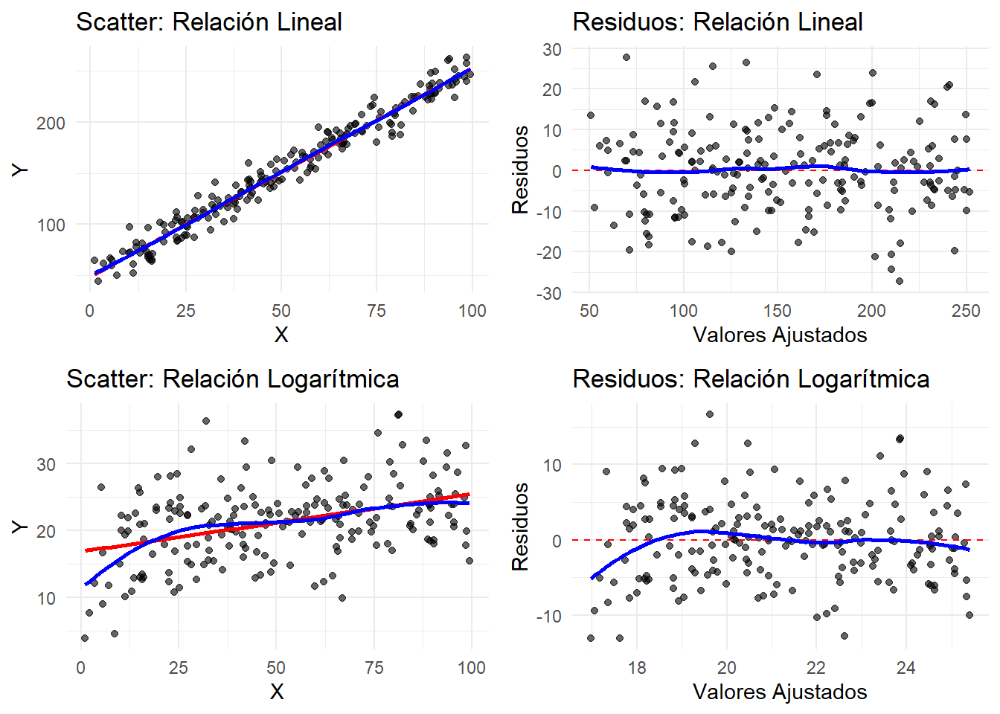
grid.arrange(
diag_power$scatter, diag_power$residuos,
diag_hetero$scatter, diag_hetero$residuos,
ncol = 2, nrow = 2
)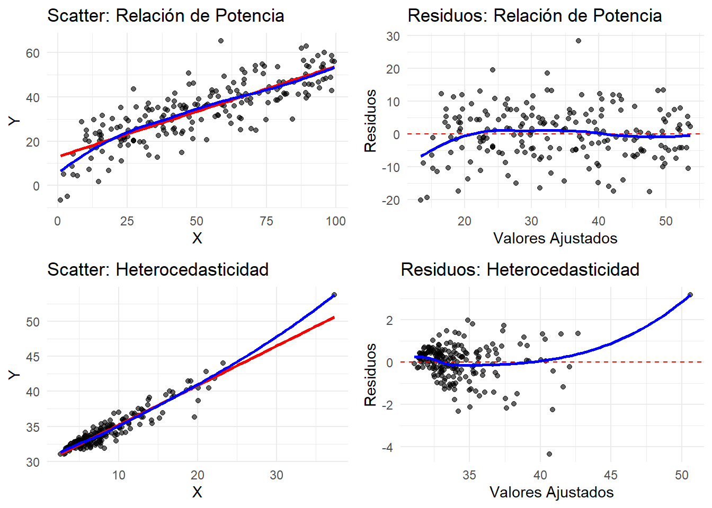
Tests Estadísticos de Diagnóstico
# Test de Breusch-Pagan para heterocedasticidad
test_hetero <- function(modelo, nombre) {
bp_test <- ncvTest(modelo)
cat("=== Test de Breusch-Pagan:", nombre, "===\n")
cat("Chi-square:", round(bp_test$ChiSquare, 4), "\n")
cat("p-valor:", round(bp_test$p, 4), "\n")
if(bp_test$p < 0.05) {
cat("Conclusión: Hay evidencia de heterocedasticidad\n\n")
} else {
cat("Conclusión: No hay evidencia de heterocedasticidad\n\n")
}
}
# Test de normalidad de residuos
test_normalidad <- function(modelo, nombre) {
residuos <- residuals(modelo)
sw_test <- shapiro.test(residuos)
cat("=== Test de Shapiro-Wilk:", nombre, "===\n")
cat("W:", round(sw_test$statistic, 4), "\n")
cat("p-valor:", round(sw_test$p.value, 4), "\n")
if(sw_test$p.value < 0.05) {
cat("Conclusión: Los residuos no siguen distribución normal\n\n")
} else {
cat("Conclusión: Los residuos siguen distribución normal\n\n")
}
}
# Test RESET para forma funcional
test_reset <- function(modelo, nombre) {
reset_test <- resettest(modelo)
cat("=== Test RESET:", nombre, "===\n")
cat("F-statistic:", round(reset_test$statistic, 4), "\n")
cat("p-valor:", round(reset_test$p.value, 4), "\n")
if(reset_test$p.value < 0.05) {
cat("Conclusión: La forma funcional es inadecuada\n\n")
} else {
cat("Conclusión: La forma funcional es adecuada\n\n")
}
}
# Aplicar tests a diferentes modelos
modelo_lineal <- lm(y_linear ~ x1, data = datos_diagnostico)
modelo_log_prob <- lm(y_log ~ x1, data = datos_diagnostico)
modelo_power_prob <- lm(y_power ~ x1, data = datos_diagnostico)
modelo_hetero_prob <- lm(y_hetero ~ x2, data = datos_diagnostico)
test_hetero(modelo_lineal, "Relación Lineal")=== Test de Breusch-Pagan: Relación Lineal ===
Chi-square: 0.0405
p-valor: 0.8405
Conclusión: No hay evidencia de heterocedasticidadtest_hetero(modelo_hetero_prob, "Heterocedasticidad")=== Test de Breusch-Pagan: Heterocedasticidad ===
Chi-square: 120.5093
p-valor: 0
Conclusión: Hay evidencia de heterocedasticidadtest_normalidad(modelo_lineal, "Relación Lineal")=== Test de Shapiro-Wilk: Relación Lineal ===
W: 0.9955
p-valor: 0.8237
Conclusión: Los residuos siguen distribución normaltest_normalidad(modelo_log_prob, "Relación Logarítmica")=== Test de Shapiro-Wilk: Relación Logarítmica ===
W: 0.9929
p-valor: 0.4455
Conclusión: Los residuos siguen distribución normalsuppressPackageStartupMessages(library(lmtest))
test_reset(modelo_lineal, "Relación Lineal")=== Test RESET: Relación Lineal ===
F-statistic: 0.0362
p-valor: 0.9645
Conclusión: La forma funcional es adecuadatest_reset(modelo_log_prob, "Relación Logarítmica (sin transformar)")=== Test RESET: Relación Logarítmica (sin transformar) ===
F-statistic: 3.3254
p-valor: 0.038
Conclusión: La forma funcional es inadecuadaParte 2: Escalado y Normalización
Comparación de Métodos de Escalado
# Crear datos con diferentes escalas
datos_escala <- data.frame(
ingresos = rnorm(100, 50000, 15000), # Ingresos en euros
edad = rnorm(100, 35, 10), # Edad en años
puntuacion = rnorm(100, 7.5, 1.2) # Puntuación de 1-10
)
# Añadir algunos outliers
datos_escala$ingresos[c(95:98)] <- c(150000, 180000, 200000, 250000)
datos_escala$edad[c(97:100)] <- c(70, 75, 80, 85)
# Aplicar diferentes métodos de escalado
datos_escalados <- datos_escala %>%
mutate(
# Estandarización (Z-score)
ingresos_std = scale(ingresos)[,1],
edad_std = scale(edad)[,1],
puntuacion_std = scale(puntuacion)[,1],
# Normalización Min-Max
ingresos_norm = (ingresos - min(ingresos)) / (max(ingresos) - min(ingresos)),
edad_norm = (edad - min(edad)) / (max(edad) - min(edad)),
puntuacion_norm = (puntuacion - min(puntuacion)) / (max(puntuacion) - min(puntuacion)),
# Escalado robusto
ingresos_rob = (ingresos - median(ingresos)) / IQR(ingresos),
edad_rob = (edad - median(edad)) / IQR(edad),
puntuacion_rob = (puntuacion - median(puntuacion)) / IQR(puntuacion)
)
# Crear tabla comparativa
crear_tabla_escalado <- function(variable, nombre) {
original <- datos_escalados[[variable]]
std <- datos_escalados[[paste0(variable, "_std")]]
norm <- datos_escalados[[paste0(variable, "_norm")]]
rob <- datos_escalados[[paste0(variable, "_rob")]]
data.frame(
Variable = nombre,
Método = c("Original", "Estandarización", "Min-Max", "Robusto"),
Media = round(c(mean(original), mean(std), mean(norm), median(rob)), 3),
Desviacion = round(c(sd(original), sd(std), sd(norm), mad(rob)), 3),
Minimo = round(c(min(original), min(std), min(norm), min(rob)), 3),
Maximo = round(c(max(original), max(std), max(norm), max(rob)), 3),
Q25 = round(c(quantile(original, 0.25), quantile(std, 0.25),
quantile(norm, 0.25), quantile(rob, 0.25)), 3),
Q75 = round(c(quantile(original, 0.75), quantile(std, 0.75),
quantile(norm, 0.75), quantile(rob, 0.75)), 3)
)
}
# Crear tablas para cada variable
tabla_ingresos <- crear_tabla_escalado("ingresos", "Ingresos")
tabla_edad <- crear_tabla_escalado("edad", "Edad")
kable(tabla_ingresos, caption = "Comparación de métodos de escalado - Ingresos")| Variable | Método | Media | Desviacion | Minimo | Maximo | Q25 | Q75 |
|---|---|---|---|---|---|---|---|
| Ingresos | Original | 57009.846 | 33021.878 | 16269.649 | 2.500e+05 | 41654.706 | 63714.607 |
| Ingresos | Estandarización | 0.000 | 1.000 | -1.234 | 5.844e+00 | -0.465 | 0.203 |
| Ingresos | Min-Max | 0.174 | 0.141 | 0.000 | 1.000e+00 | 0.109 | 0.203 |
| Ingresos | Robusto | 0.000 | 0.772 | -1.604 | 8.991e+00 | -0.454 | 0.546 |
kable(tabla_edad, caption = "Comparación de métodos de escalado - Edad")| Variable | Método | Media | Desviacion | Minimo | Maximo | Q25 | Q75 |
|---|---|---|---|---|---|---|---|
| Edad | Original | 36.160 | 13.760 | 4.521 | 85.000 | 26.891 | 44.055 |
| Edad | Estandarización | 0.000 | 1.000 | -2.299 | 3.549 | -0.674 | 0.574 |
| Edad | Min-Max | 0.393 | 0.171 | 0.000 | 1.000 | 0.278 | 0.491 |
| Edad | Robusto | 0.000 | 0.754 | -1.781 | 2.908 | -0.477 | 0.523 |
Visualización del Impacto del Escalado
# Crear versión larga para visualización
datos_viz <- datos_escalados %>%
dplyr::select(ingresos, ingresos_std, ingresos_norm, ingresos_rob) %>%
mutate(id = row_number()) %>%
pivot_longer(cols = -id, names_to = "método", values_to = "valor") %>%
mutate(método = factor(método,
levels = c("ingresos", "ingresos_std", "ingresos_norm", "ingresos_rob"),
labels = c("Original", "Estandarización", "Min-Max", "Robusto")))
# Boxplots comparativos
ggplot(datos_viz, aes(x = método, y = valor, fill = método)) +
geom_boxplot() +
labs(title = "Comparación de Métodos de Escalado",
subtitle = "Efecto en la distribución de Ingresos",
x = "Método de Escalado", y = "Valores Transformados") +
theme_minimal() +
theme(legend.position = "none") +
coord_flip()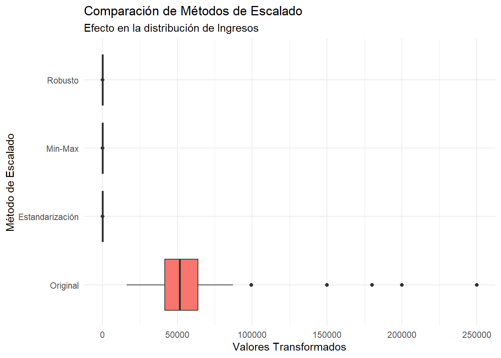
# Densidades superpuestas
ggplot(datos_viz, aes(x = valor, fill = método)) +
geom_density(alpha = 0.5) +
facet_wrap(~método, scales = "free") +
labs(title = "Distribuciones después del Escalado",
x = "Valores", y = "Densidad") +
theme_minimal() +
theme(legend.position = "none")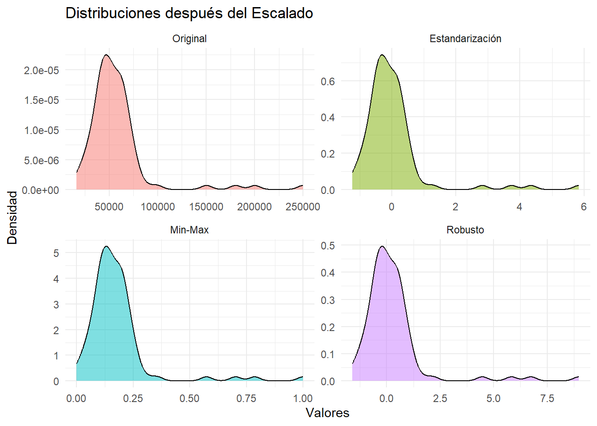
Parte 3: Transformaciones Clásicas
Transformación Logarítmica
# Datos con relación exponencial y heterocedasticidad multiplicativa
n <- 150
x_exp <- runif(n, 1, 10)
y_exp <- 5 * exp(0.3 * x_exp) + rnorm(n, 0, 2 * exp(0.15 * x_exp))
datos_exp <- data.frame(x = x_exp, y = y_exp)
# Modelo original (problemático)
modelo_original <- lm(y ~ x, data = datos_exp)
# Transformación logarítmica de Y
datos_exp$log_y <- log(datos_exp$y)
modelo_log_y <- lm(log_y ~ x, data = datos_exp)
# Transformación logarítmica de ambas variables
datos_exp$log_x <- log(datos_exp$x)
modelo_log_log <- lm(log_y ~ log_x, data = datos_exp)
# Comparar modelos
cat("=== COMPARACIÓN DE MODELOS CON TRANSFORMACIÓN LOGARÍTMICA ===\n")=== COMPARACIÓN DE MODELOS CON TRANSFORMACIÓN LOGARÍTMICA ===cat("Modelo original - R²:", round(summary(modelo_original)$r.squared, 4), "\n")Modelo original - R²: 0.892 cat("Modelo log-lineal - R²:", round(summary(modelo_log_y)$r.squared, 4), "\n")Modelo log-lineal - R²: 0.9345 cat("Modelo log-log - R²:", round(summary(modelo_log_log)$r.squared, 4), "\n\n")Modelo log-log - R²: 0.8679 # Diagnósticos de heterocedasticidad
test_hetero(modelo_original, "Original")=== Test de Breusch-Pagan: Original ===
Chi-square: 9.0689
p-valor: 0.0026
Conclusión: Hay evidencia de heterocedasticidadtest_hetero(modelo_log_y, "Log-Lineal")=== Test de Breusch-Pagan: Log-Lineal ===
Chi-square: 52.2872
p-valor: 0
Conclusión: Hay evidencia de heterocedasticidad# Visualización de transformaciones
p1 <- ggplot(datos_exp, aes(x = x, y = y)) +
geom_point(alpha = 0.6) +
geom_smooth(method = "lm", se = TRUE, color = "red") +
labs(title = "Modelo Original", x = "X", y = "Y") +
theme_minimal()
p2 <- ggplot(datos_exp, aes(x = x, y = log_y)) +
geom_point(alpha = 0.6) +
geom_smooth(method = "lm", se = TRUE, color = "red") +
labs(title = "Transformación Log(Y)", x = "X", y = "Log(Y)") +
theme_minimal()
p3 <- ggplot(datos_exp, aes(x = log_x, y = log_y)) +
geom_point(alpha = 0.6) +
geom_smooth(method = "lm", se = TRUE, color = "red") +
labs(title = "Transformación Log-Log", x = "Log(X)", y = "Log(Y)") +
theme_minimal()
grid.arrange(p1, p2, p3, ncol = 3)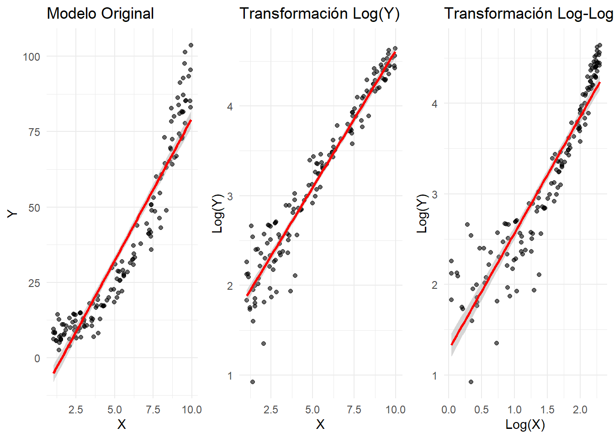
Interpretación de Coeficientes Transformados
# Extraer coeficientes para interpretación
coef_log_y <- coef(modelo_log_y)
coef_log_log <- coef(modelo_log_log)
cat("=== INTERPRETACIÓN DE COEFICIENTES ===\n\n")=== INTERPRETACIÓN DE COEFICIENTES ===cat("MODELO LOG-LINEAL: log(Y) = β₀ + β₁X\n")MODELO LOG-LINEAL: log(Y) = β₀ + β₁Xcat("Intercepto:", round(coef_log_y[1], 4), "\n")Intercepto: 1.5641 cat("Pendiente:", round(coef_log_y[2], 4), "\n")Pendiente: 0.3058 cat("Interpretación: Un aumento de 1 unidad en X se asocia con un cambio de",
round(coef_log_y[2]*100, 2), "% en Y\n\n")Interpretación: Un aumento de 1 unidad en X se asocia con un cambio de 30.58 % en Ycat("MODELO LOG-LOG: log(Y) = β₀ + β₁log(X)\n")MODELO LOG-LOG: log(Y) = β₀ + β₁log(X)cat("Intercepto:", round(coef_log_log[1], 4), "\n")Intercepto: 1.2842 cat("Pendiente (elasticidad):", round(coef_log_log[2], 4), "\n")Pendiente (elasticidad): 1.2843 cat("Interpretación: Un aumento de 1% en X se asocia con un cambio de",
round(coef_log_log[2], 2), "% en Y\n\n")Interpretación: Un aumento de 1% en X se asocia con un cambio de 1.28 % en Y# Ejemplo de predicción con retransformación
x_nuevo <- 5
pred_log_y <- predict(modelo_log_y, newdata = data.frame(x = x_nuevo))
pred_original <- exp(pred_log_y)
cat("EJEMPLO DE PREDICCIÓN:\n")EJEMPLO DE PREDICCIÓN:cat("Para X =", x_nuevo, ":\n")Para X = 5 :cat("Log(Y) predicho:", round(pred_log_y, 4), "\n")Log(Y) predicho: 3.093 cat("Y predicho (retransformado):", round(pred_original, 2), "\n")Y predicho (retransformado): 22.04 Transformación de Raíz Cuadrada
# Datos de conteo con varianza proporcional a la media (Poisson-like)
n <- 120
x_count <- runif(n, 1, 20)
lambda <- 2 + 0.5 * x_count # Media de Poisson variable
y_count <- rpois(n, lambda)
datos_count <- data.frame(x = x_count, y = y_count)
# Verificar relación varianza-media
grupos <- cut(datos_count$x, breaks = 4)
media_por_grupo <- tapply(datos_count$y, grupos, mean)
var_por_grupo <- tapply(datos_count$y, grupos, var)
cat("=== DIAGNÓSTICO VARIANZA-MEDIA ===\n")=== DIAGNÓSTICO VARIANZA-MEDIA ===tabla_var_media <- data.frame(
Grupo = names(media_por_grupo),
Media = round(media_por_grupo, 2),
Varianza = round(var_por_grupo, 2),
Ratio_Var_Media = round(var_por_grupo / media_por_grupo, 2)
)
kable(tabla_var_media, caption = "Relación Varianza-Media por grupos")| Grupo | Media | Varianza | Ratio_Var_Media | |
|---|---|---|---|---|
| (1.17,5.84] | (1.17,5.84] | 3.59 | 4.03 | 1.12 |
| (5.84,10.5] | (5.84,10.5] | 7.00 | 11.20 | 1.60 |
| (10.5,15.1] | (10.5,15.1] | 9.00 | 6.89 | 0.77 |
| (15.1,19.8] | (15.1,19.8] | 10.58 | 8.43 | 0.80 |
# Modelo original
modelo_count_orig <- lm(y ~ x, data = datos_count)
# Transformación raíz cuadrada
datos_count$sqrt_y <- sqrt(datos_count$y)
modelo_sqrt <- lm(sqrt_y ~ x, data = datos_count)
# Comparar heterocedasticidad
test_hetero(modelo_count_orig, "Datos de Conteo Original")=== Test de Breusch-Pagan: Datos de Conteo Original ===
Chi-square: 1.6373
p-valor: 0.2007
Conclusión: No hay evidencia de heterocedasticidadtest_hetero(modelo_sqrt, "Datos con Transformación √Y")=== Test de Breusch-Pagan: Datos con Transformación √Y ===
Chi-square: 4.2819
p-valor: 0.0385
Conclusión: Hay evidencia de heterocedasticidad# Visualización
p1 <- ggplot(datos_count, aes(x = x, y = y)) +
geom_point(alpha = 0.6) +
geom_smooth(method = "lm", se = TRUE, color = "red") +
labs(title = "Datos Originales", x = "X", y = "Y (conteos)") +
theme_minimal()
p2 <- ggplot(datos_count, aes(x = x, y = sqrt_y)) +
geom_point(alpha = 0.6) +
geom_smooth(method = "lm", se = TRUE, color = "red") +
labs(title = "Transformación √Y", x = "X", y = "√Y") +
theme_minimal()
# Gráficos de residuos
residuos_orig <- residuals(modelo_count_orig)
residuos_sqrt <- residuals(modelo_sqrt)
ajustados_orig <- fitted(modelo_count_orig)
ajustados_sqrt <- fitted(modelo_sqrt)
p3 <- ggplot(data.frame(x = ajustados_orig, y = residuos_orig), aes(x = x, y = y)) +
geom_point(alpha = 0.6) +
geom_hline(yintercept = 0, color = "red", linetype = "dashed") +
geom_smooth(se = FALSE, color = "blue") +
labs(title = "Residuos - Original", x = "Ajustados", y = "Residuos") +
theme_minimal()
p4 <- ggplot(data.frame(x = ajustados_sqrt, y = residuos_sqrt), aes(x = x, y = y)) +
geom_point(alpha = 0.6) +
geom_hline(yintercept = 0, color = "red", linetype = "dashed") +
geom_smooth(se = FALSE, color = "blue") +
labs(title = "Residuos - √Y", x = "Ajustados", y = "Residuos") +
theme_minimal()
grid.arrange(p1, p2, p3, p4, ncol = 2)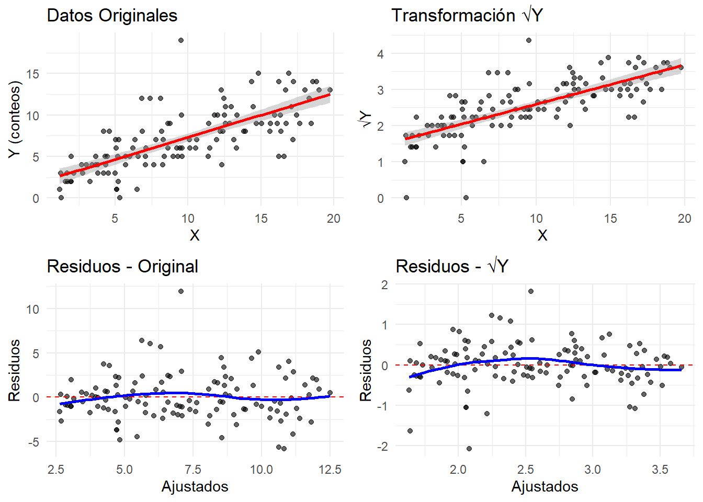
Parte 4: Transformaciones Avanzadas - Box-Cox
Implementación de Box-Cox
# Datos con distribución asimétrica
n <- 150
x_bc <- runif(n, 1, 10)
# Variable respuesta con asimetría positiva
y_bc <- 2*x_bc^1.5 + rgamma(n, 2, 1)
datos_bc <- data.frame(x = x_bc, y = y_bc)
# Análisis de distribución original
p1 <- ggplot(datos_bc, aes(x = y)) +
geom_histogram(bins = 20, alpha = 0.7, fill = "lightblue", color = "black") +
labs(title = "Distribución Original de Y", x = "Y", y = "Frecuencia") +
theme_minimal()
p2 <- ggplot(datos_bc, aes(sample = y)) +
stat_qq() +
stat_qq_line(color = "red") +
labs(title = "Q-Q Plot Original", x = "Cuantiles Teóricos", y = "Cuantiles Muestra") +
theme_minimal()
grid.arrange(p1, p2, ncol = 2)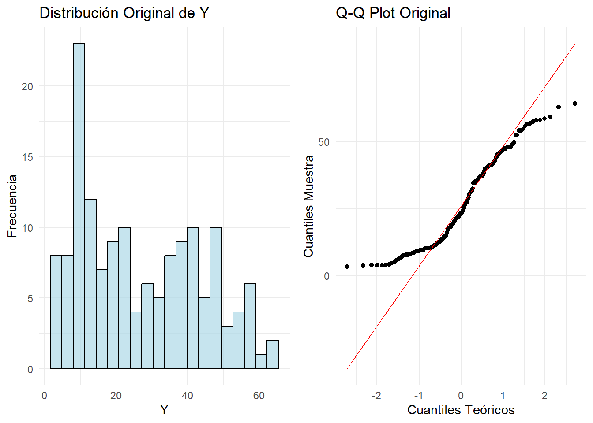
# Aplicar transformación Box-Cox
modelo_bc_orig <- lm(y ~ x, data = datos_bc)
# Buscar lambda óptimo
bc_result <- boxcox(modelo_bc_orig, plotit = TRUE)
lambda_optimo <- bc_result$x[which.max(bc_result$y)]
cat("=== TRANSFORMACIÓN BOX-COX ===\n")=== TRANSFORMACIÓN BOX-COX ===cat("Lambda óptimo:", round(lambda_optimo, 4), "\n")Lambda óptimo: 0.6263 # Interpretar lambda
if(abs(lambda_optimo - 1) < 0.1) {
cat("Interpretación: Sin transformación (λ ≈ 1)\n")
} else if(abs(lambda_optimo - 0.5) < 0.1) {
cat("Interpretación: Transformación de raíz cuadrada (λ ≈ 0.5)\n")
} else if(abs(lambda_optimo - 0) < 0.1) {
cat("Interpretación: Transformación logarítmica (λ ≈ 0)\n")
} else if(abs(lambda_optimo - (-1)) < 0.1) {
cat("Interpretación: Transformación inversa (λ ≈ -1)\n")
} else {
cat("Interpretación: Transformación de potencia con λ =", round(lambda_optimo, 3), "\n")
}Interpretación: Transformación de potencia con λ = 0.626 # Aplicar transformación
if(abs(lambda_optimo) < 0.01) {
datos_bc$y_bc <- log(datos_bc$y)
} else {
datos_bc$y_bc <- (datos_bc$y^lambda_optimo - 1) / lambda_optimo
}
# Modelo con variable transformada
modelo_bc_trans <- lm(y_bc ~ x, data = datos_bc)
# Comparar modelos
cat("\nComparación de modelos:\n")
Comparación de modelos:cat("R² original:", round(summary(modelo_bc_orig)$r.squared, 4), "\n")R² original: 0.9796 cat("R² transformado:", round(summary(modelo_bc_trans)$r.squared, 4), "\n")R² transformado: 0.9895 # Tests de normalidad
test_normalidad(modelo_bc_orig, "Original")=== Test de Shapiro-Wilk: Original ===
W: 0.9484
p-valor: 0
Conclusión: Los residuos no siguen distribución normaltest_normalidad(modelo_bc_trans, "Box-Cox")=== Test de Shapiro-Wilk: Box-Cox ===
W: 0.8892
p-valor: 0
Conclusión: Los residuos no siguen distribución normalAnálisis Post-Transformación
# Distribución después de transformación
p3 <- ggplot(datos_bc, aes(x = y_bc)) +
geom_histogram(bins = 20, alpha = 0.7, fill = "lightgreen", color = "black") +
labs(title = "Distribución Después de Box-Cox", x = "Y Transformada", y = "Frecuencia") +
theme_minimal()
p4 <- ggplot(datos_bc, aes(sample = y_bc)) +
stat_qq() +
stat_qq_line(color = "red") +
labs(title = "Q-Q Plot Después de Box-Cox", x = "Cuantiles Teóricos", y = "Cuantiles Muestra") +
theme_minimal()
grid.arrange(p3, p4, ncol = 2)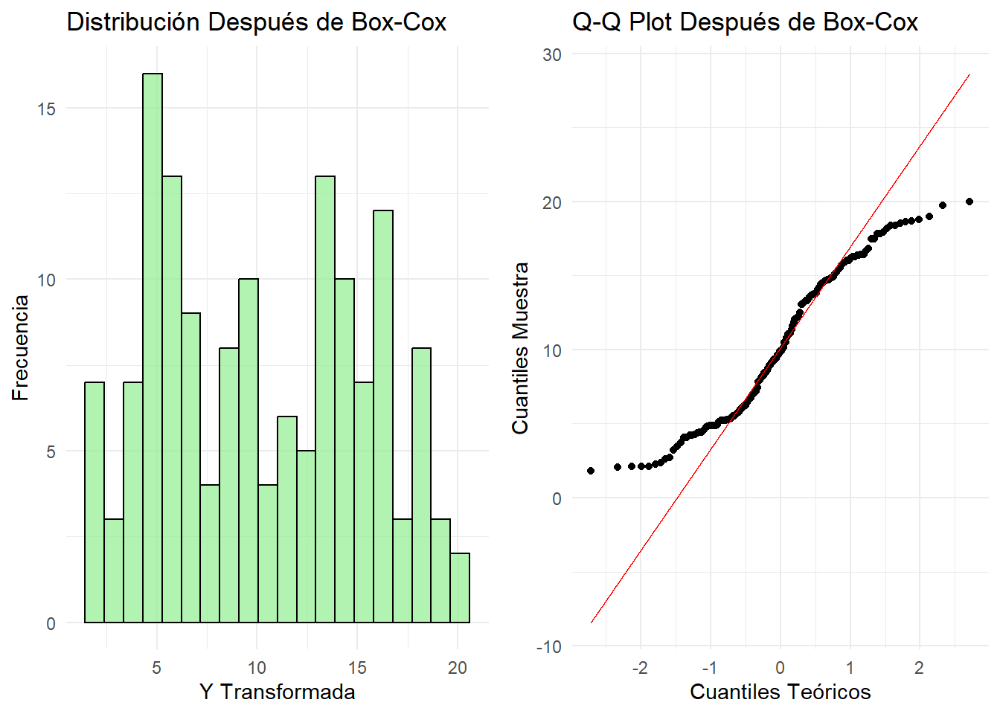
# Gráficos de regresión
p5 <- ggplot(datos_bc, aes(x = x, y = y)) +
geom_point(alpha = 0.6) +
geom_smooth(method = "lm", se = TRUE, color = "red") +
labs(title = "Regresión Original", x = "X", y = "Y") +
theme_minimal()
p6 <- ggplot(datos_bc, aes(x = x, y = y_bc)) +
geom_point(alpha = 0.6) +
geom_smooth(method = "lm", se = TRUE, color = "red") +
labs(title = "Regresión con Box-Cox", x = "X", y = "Y Transformada") +
theme_minimal()
grid.arrange(p5, p6, ncol = 2)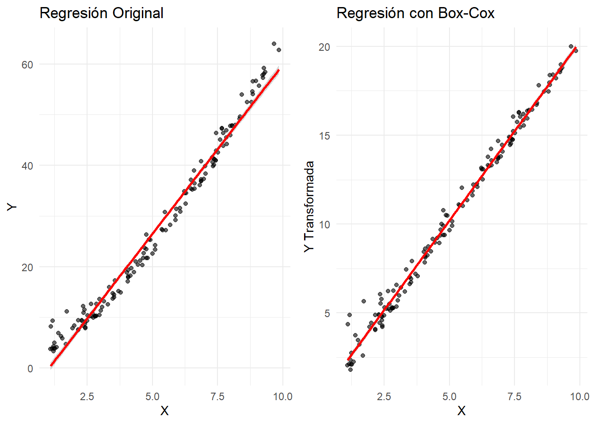
# Interpretación y predicción con retransformación
coef_bc <- coef(modelo_bc_trans)
x_pred <- 5
y_trans_pred <- predict(modelo_bc_trans, newdata = data.frame(x = x_pred))
# Retransformación (aproximación)
if(abs(lambda_optimo) < 0.01) {
y_orig_pred <- exp(y_trans_pred)
} else {
y_orig_pred <- (lambda_optimo * y_trans_pred + 1)^(1/lambda_optimo)
}
cat("\n=== PREDICCIÓN CON RETRANSFORMACIÓN ===\n")
=== PREDICCIÓN CON RETRANSFORMACIÓN ===cat("Para X =", x_pred, ":\n")Para X = 5 :cat("Y transformada predicha:", round(y_trans_pred, 4), "\n")Y transformada predicha: 10.1962 cat("Y original predicha (retransformada):", round(y_orig_pred, 2), "\n")Y original predicha (retransformada): 24.36 Parte 5: Tratamiento de Variables Categóricas
One-Hot Encoding vs Codificación Ordinal
# Crear dataset con variables categóricas variadas
set.seed(456)
n <- 200
datos_cat <- data.frame(
# Variable ordinal
educacion = sample(c("Primaria", "Secundaria", "Universidad", "Posgrado"),
n, replace = TRUE, prob = c(0.2, 0.3, 0.4, 0.1)),
# Variable nominal
region = sample(c("Norte", "Sur", "Este", "Oeste"),
n, replace = TRUE, prob = c(0.3, 0.25, 0.25, 0.2)),
# Variable binaria
genero = sample(c("M", "F"), n, replace = TRUE),
# Variables numéricas
experiencia = round(runif(n, 0, 20)),
edad = round(rnorm(n, 35, 8))
)
# Crear variable respuesta que depende de las categóricas
salario_base <- 30000
efecto_educacion <- c("Primaria" = 0, "Secundaria" = 5000,
"Universidad" = 15000, "Posgrado" = 25000)
efecto_region <- c("Norte" = 2000, "Sur" = 0, "Este" = 1000, "Oeste" = 1500)
efecto_genero <- c("M" = 3000, "F" = 0)
datos_cat$salario <- salario_base +
efecto_educacion[datos_cat$educacion] +
efecto_region[datos_cat$region] +
efecto_genero[datos_cat$genero] +
500 * datos_cat$experiencia +
200 * datos_cat$edad +
rnorm(n, 0, 5000)
# Resumen de los datos categóricos
cat("=== DISTRIBUCIÓN DE VARIABLES CATEGÓRICAS ===\n")=== DISTRIBUCIÓN DE VARIABLES CATEGÓRICAS ===table(datos_cat$educacion)
Posgrado Primaria Secundaria Universidad
29 43 61 67 table(datos_cat$region)
Este Norte Oeste Sur
44 71 42 43 table(datos_cat$genero)
F M
92 108 Implementación de Codificación Ordinal
# Codificación ordinal para educación (variable con orden natural)
datos_cat$educacion_ord <- as.numeric(factor(datos_cat$educacion,
levels = c("Primaria", "Secundaria", "Universidad", "Posgrado"),
ordered = TRUE))
# Verificar la codificación
tabla_ord <- data.frame(
Categoria = c("Primaria", "Secundaria", "Universidad", "Posgrado"),
Codigo = 1:4
)
kable(tabla_ord, caption = "Codificación Ordinal - Educación")| Categoria | Codigo |
|---|---|
| Primaria | 1 |
| Secundaria | 2 |
| Universidad | 3 |
| Posgrado | 4 |
# Modelo con codificación ordinal
modelo_ordinal <- lm(salario ~ educacion_ord + experiencia + edad, data = datos_cat)
summary(modelo_ordinal)
Call:
lm(formula = salario ~ educacion_ord + experiencia + edad, data = datos_cat)
Residuals:
Min 1Q Median 3Q Max
-15841.8 -3753.9 32.3 3451.6 14428.8
Coefficients:
Estimate Std. Error t value Pr(>|t|)
(Intercept) 24468.69 2065.35 11.847 < 2e-16 ***
educacion_ord 8097.45 382.35 21.178 < 2e-16 ***
experiencia 384.80 64.91 5.928 1.36e-08 ***
edad 205.66 47.27 4.351 2.18e-05 ***
---
Signif. codes: 0 '***' 0.001 '**' 0.01 '*' 0.05 '.' 0.1 ' ' 1
Residual standard error: 5282 on 196 degrees of freedom
Multiple R-squared: 0.7225, Adjusted R-squared: 0.7182
F-statistic: 170.1 on 3 and 196 DF, p-value: < 2.2e-16cat("=== INTERPRETACIÓN CODIFICACIÓN ORDINAL ===\n")=== INTERPRETACIÓN CODIFICACIÓN ORDINAL ===coef_ord <- coef(modelo_ordinal)
cat("Coeficiente educación:", round(coef_ord[2], 2), "\n")Coeficiente educación: 8097.45 cat("Interpretación: Cada nivel adicional de educación aumenta el salario en €",
round(coef_ord[2], 0), "\n\n")Interpretación: Cada nivel adicional de educación aumenta el salario en € 8097 Implementación de One-Hot Encoding
# One-Hot Encoding para región (variable nominal)
# Método 1: usando model.matrix (elimina una categoría de referencia)
region_dummies <- model.matrix(~ region - 1, data = datos_cat)
colnames(region_dummies) <- paste0("region_", colnames(region_dummies))
# Método 2: usando caret::dummyVars (control de rank)
dummy_vars <- dummyVars(~ region, data = datos_cat, fullRank = TRUE)
region_dummies_caret <- predict(dummy_vars, newdata = datos_cat)
# Añadir dummies al dataset
datos_cat_dummy <- cbind(datos_cat, region_dummies_caret)
# Verificar la codificación
cat("=== ONE-HOT ENCODING - REGIÓN ===\n")=== ONE-HOT ENCODING - REGIÓN ===cat("Variables creadas:", colnames(region_dummies_caret), "\n")Variables creadas: regionNorte regionOeste regionSur cat("Categoría de referencia: Norte (omitida para evitar colinealidad)\n\n")Categoría de referencia: Norte (omitida para evitar colinealidad)# Mostrar algunas filas como ejemplo
ejemplo_encoding <- datos_cat_dummy[1:8, c("region", colnames(region_dummies_caret))]
kable(ejemplo_encoding, caption = "Ejemplo de One-Hot Encoding")| region | regionNorte | regionOeste | regionSur |
|---|---|---|---|
| Este | 0 | 0 | 0 |
| Sur | 0 | 0 | 1 |
| Oeste | 0 | 1 | 0 |
| Norte | 1 | 0 | 0 |
| Este | 0 | 0 | 0 |
| Norte | 1 | 0 | 0 |
| Este | 0 | 0 | 0 |
| Sur | 0 | 0 | 1 |
# Obtener los nombres de las columnas dummy creadas
dummy_cols <- colnames(region_dummies_caret)
cat("Columnas dummy creadas:", paste(dummy_cols, collapse = ", "), "\n")Columnas dummy creadas: regionNorte, regionOeste, regionSur # Crear la fórmula del modelo dinámicamente
formula_str <- paste("salario ~", paste(dummy_cols, collapse = " + "), "+ educacion_ord + experiencia + edad")
cat("Fórmula del modelo:", formula_str, "\n")Fórmula del modelo: salario ~ regionNorte + regionOeste + regionSur + educacion_ord + experiencia + edad # Modelo con one-hot encoding
modelo_onehot <- lm(as.formula(formula_str), data = datos_cat_dummy)
summary(modelo_onehot)
Call:
lm(formula = as.formula(formula_str), data = datos_cat_dummy)
Residuals:
Min 1Q Median 3Q Max
-16295.1 -3689.4 -273.2 3365.7 14839.9
Coefficients:
Estimate Std. Error t value Pr(>|t|)
(Intercept) 24332.62 2127.43 11.438 < 2e-16 ***
regionNorte 536.26 1023.70 0.524 0.601
regionOeste -334.06 1158.94 -0.288 0.773
regionSur -207.58 1145.13 -0.181 0.856
educacion_ord 8100.57 387.01 20.931 < 2e-16 ***
experiencia 386.76 65.53 5.902 1.59e-08 ***
edad 206.54 47.77 4.324 2.46e-05 ***
---
Signif. codes: 0 '***' 0.001 '**' 0.01 '*' 0.05 '.' 0.1 ' ' 1
Residual standard error: 5310 on 193 degrees of freedom
Multiple R-squared: 0.7238, Adjusted R-squared: 0.7152
F-statistic: 84.29 on 6 and 193 DF, p-value: < 2.2e-16cat("=== INTERPRETACIÓN ONE-HOT ENCODING ===\n")=== INTERPRETACIÓN ONE-HOT ENCODING ===coef_oh <- coef(modelo_onehot)
if(length(dummy_cols) >= 3) {
cat("Coeficientes de las regiones (vs categoría de referencia):\n")
for(i in 1:length(dummy_cols)) {
if(dummy_cols[i] %in% names(coef_oh)) {
cat(dummy_cols[i], ":", round(coef_oh[dummy_cols[i]], 2), "€\n")
}
}
}Coeficientes de las regiones (vs categoría de referencia):
regionNorte : 536.26 €
regionOeste : -334.06 €
regionSur : -207.58 €cat("(La categoría omitida es la de referencia)\n\n")(La categoría omitida es la de referencia)Comparación de Métodos de Codificación
# Modelo incorrecto: tratando región como ordinal
datos_cat$region_num <- as.numeric(factor(datos_cat$region))
modelo_incorrecto <- lm(salario ~ region_num + educacion_ord + experiencia + edad, data = datos_cat)
# Comparar los tres enfoques
modelos_comp <- list(
"Ordinal_Incorrecto" = modelo_incorrecto,
"OneHot_Correcto" = modelo_onehot,
"Factores_R" = lm(salario ~ region + educacion_ord + experiencia + edad, data = datos_cat)
)
# Extraer métricas de comparación
comparacion_encoding <- data.frame(
Modelo = names(modelos_comp),
R2 = sapply(modelos_comp, function(m) summary(m)$r.squared),
R2_adj = sapply(modelos_comp, function(m) summary(m)$adj.r.squared),
AIC = sapply(modelos_comp, AIC),
RMSE = sapply(modelos_comp, function(m) sqrt(mean(residuals(m)^2)))
)
# Crear una copia para mostrar con números redondeados
comparacion_display <- comparacion_encoding
comparacion_display[, 2:5] <- round(comparacion_display[, 2:5], 4)
kable(comparacion_display, caption = "Comparación de métodos de codificación")| Modelo | R2 | R2_adj | AIC | RMSE | |
|---|---|---|---|---|---|
| Ordinal_Incorrecto | Ordinal_Incorrecto | 0.7228 | 0.7171 | 4004.086 | 5225.345 |
| OneHot_Correcto | OneHot_Correcto | 0.7238 | 0.7152 | 4007.380 | 5216.136 |
| Factores_R | Factores_R | 0.7238 | 0.7152 | 4007.380 | 5216.136 |
cat("=== ANÁLISIS DE RESULTADOS ===\n")=== ANÁLISIS DE RESULTADOS ===cat("El modelo 'Ordinal_Incorrecto' asume incorrectamente que las regiones tienen un orden natural.\n")El modelo 'Ordinal_Incorrecto' asume incorrectamente que las regiones tienen un orden natural.cat("Los modelos 'OneHot_Correcto' y 'Factores_R' son equivalentes y tratan región como nominal.\n")Los modelos 'OneHot_Correcto' y 'Factores_R' son equivalentes y tratan región como nominal.cat("La diferencia en R² muestra el impacto de la codificación incorrecta.\n\n")La diferencia en R² muestra el impacto de la codificación incorrecta.# Visualización del error de codificación ordinal incorrecta
medias_region_real <- aggregate(salario ~ region, data = datos_cat, mean)
orden_real <- medias_region_real[order(medias_region_real$salario), ]
cat("Orden real de regiones por salario promedio:\n")Orden real de regiones por salario promedio:print(orden_real) region salario
1 Este 54020.46
4 Sur 54644.99
2 Norte 56278.44
3 Oeste 57079.01cat("\nOrden asumido por codificación numérica:\n")
Orden asumido por codificación numérica:print(data.frame(region = levels(factor(datos_cat$region)), codigo = 1:4)) region codigo
1 Este 1
2 Norte 2
3 Oeste 3
4 Sur 4Parte 6: Interacciones entre Variables
Interacciones Continua × Continua
# Simular datos con interacción precio-publicidad
set.seed(789)
n <- 200
precio <- runif(n, 50, 150)
publicidad <- runif(n, 0, 10)
# Modelo con interacción: el efecto del precio depende de la publicidad
# A mayor publicidad, menor sensibilidad al precio
ventas <- 1000 - 4*precio + 60*publicidad + 0.6*precio*publicidad/10 + rnorm(n, 0, 50)
datos_inter <- data.frame(precio, publicidad, ventas)
# Modelo sin interacción
modelo_sin_inter <- lm(ventas ~ precio + publicidad, data = datos_inter)
# Modelo con interacción
modelo_con_inter <- lm(ventas ~ precio * publicidad, data = datos_inter)
# Comparar modelos
cat("=== COMPARACIÓN MODELOS CON/SIN INTERACCIÓN ===\n")=== COMPARACIÓN MODELOS CON/SIN INTERACCIÓN ===cat("Sin interacción - R²:", round(summary(modelo_sin_inter)$r.squared, 4), "\n")Sin interacción - R²: 0.9547 cat("Con interacción - R²:", round(summary(modelo_con_inter)$r.squared, 4), "\n")Con interacción - R²: 0.9547 # Test F para la interacción
anova_inter <- anova(modelo_sin_inter, modelo_con_inter)
print(anova_inter)Analysis of Variance Table
Model 1: ventas ~ precio + publicidad
Model 2: ventas ~ precio * publicidad
Res.Df RSS Df Sum of Sq F Pr(>F)
1 197 507537
2 196 507252 1 284.86 0.1101 0.7404# Interpretación de coeficientes
coef_inter <- coef(modelo_con_inter)
cat("\n=== INTERPRETACIÓN DE LA INTERACCIÓN ===\n")
=== INTERPRETACIÓN DE LA INTERACCIÓN ===cat("Intercepto:", round(coef_inter[1], 2), "\n")Intercepto: 968.37 cat("Efecto precio:", round(coef_inter[2], 4), "\n")Efecto precio: -3.7432 cat("Efecto publicidad:", round(coef_inter[3], 2), "\n")Efecto publicidad: 65.78 cat("Interacción precio×publicidad:", round(coef_inter[4], 6), "\n\n")Interacción precio×publicidad: 0.014703 # Calcular efectos marginales en diferentes niveles de publicidad
publicidad_niveles <- c(0, 5, 10)
efectos_precio <- coef_inter[2] + coef_inter[4] * publicidad_niveles
tabla_efectos <- data.frame(
Publicidad = publicidad_niveles,
Efecto_Precio = round(efectos_precio, 4)
)
kable(tabla_efectos, caption = "Efecto del precio según nivel de publicidad")| Publicidad | Efecto_Precio |
|---|---|
| 0 | -3.7432 |
| 5 | -3.6697 |
| 10 | -3.5962 |
Visualización de Interacciones
# Crear grupos de publicidad para visualización
datos_inter$pub_grupo <- cut(datos_inter$publicidad,
breaks = 3,
labels = c("Baja", "Media", "Alta"))
# Gráfico de interacción - scatter plot
ggplot(datos_inter, aes(x = precio, y = ventas, color = pub_grupo)) +
geom_point(alpha = 0.6) +
geom_smooth(method = "lm", formula = y ~ x, se = FALSE, linewidth = 1.2) +
labs(title = "Interacción Precio × Publicidad",
subtitle = "El efecto del precio varía según el nivel de publicidad",
x = "Precio (€)", y = "Ventas", color = "Publicidad") +
theme_minimal()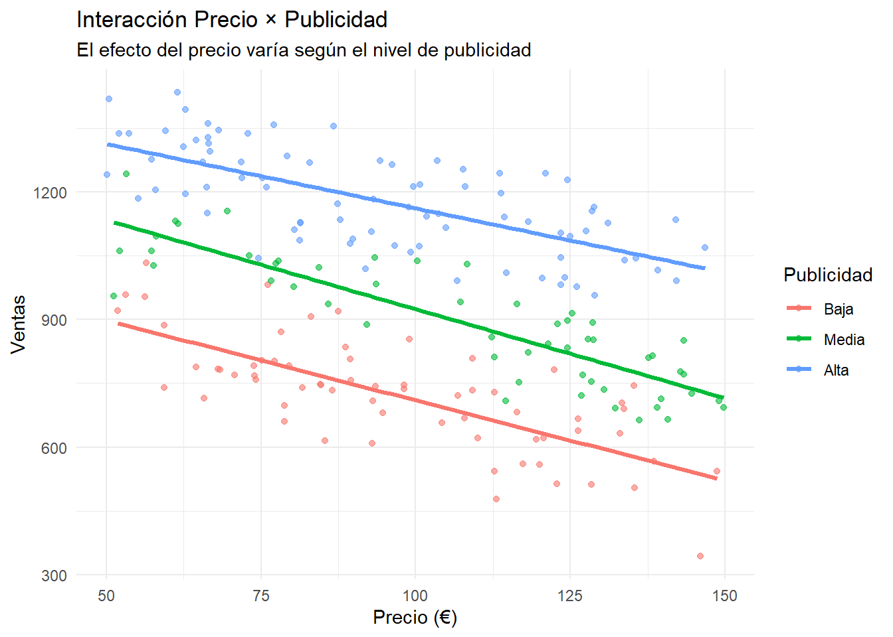
# Gráfico de interacción clásico
# Calcular medias por grupos
datos_inter$precio_grupo <- cut(datos_inter$precio,
breaks = 3,
labels = c("Bajo", "Medio", "Alto"))
medias_inter <- aggregate(ventas ~ precio_grupo + pub_grupo, data = datos_inter, mean)
ggplot(medias_inter, aes(x = precio_grupo, y = ventas, color = pub_grupo, group = pub_grupo)) +
geom_point(size = 3) +
geom_line(linewidth = 1) +
labs(title = "Gráfico de Interacción: Precio × Publicidad",
subtitle = "Líneas no paralelas indican presencia de interacción",
x = "Nivel de Precio", y = "Ventas Promedio", color = "Publicidad") +
theme_minimal()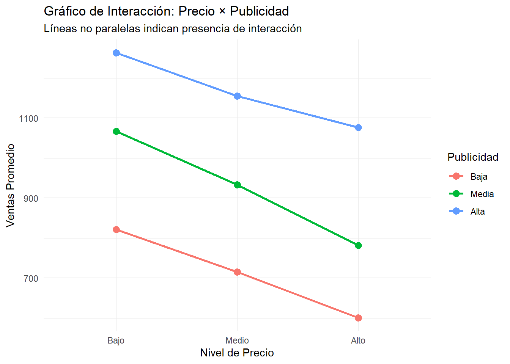
Interacciones Categórica × Continua
# Interacción género × experiencia en salarios
datos_mixta <- data.frame(
experiencia = runif(150, 0, 20),
genero = sample(c("Masculino", "Femenino"), 150, replace = TRUE)
)
# Salario con interacción: brecha de género creciente con experiencia
salario_base <- 35000
efecto_exp_mujer <- 1200 # €1200 por año para mujeres
efecto_exp_hombre <- 2000 # €2000 por año para hombres
efecto_genero_base <- ifelse(datos_mixta$genero == "Masculino", 3000, 0)
dummy_masculino <- ifelse(datos_mixta$genero == "Masculino", 1, 0)
datos_mixta$salario <- salario_base +
efecto_exp_mujer * datos_mixta$experiencia +
efecto_genero_base * dummy_masculino +
(efecto_exp_hombre - efecto_exp_mujer) * datos_mixta$experiencia * dummy_masculino +
rnorm(150, 0, 4000)
# Modelo con interacción
modelo_mixta <- lm(salario ~ experiencia * genero, data = datos_mixta)
summary(modelo_mixta)
Call:
lm(formula = salario ~ experiencia * genero, data = datos_mixta)
Residuals:
Min 1Q Median 3Q Max
-7053 -2853 -291 2374 11601
Coefficients:
Estimate Std. Error t value Pr(>|t|)
(Intercept) 35428.06 900.18 39.356 < 2e-16 ***
experiencia 1186.73 72.01 16.481 < 2e-16 ***
generoMasculino 2349.22 1369.90 1.715 0.0885 .
experiencia:generoMasculino 767.85 118.21 6.495 1.22e-09 ***
---
Signif. codes: 0 '***' 0.001 '**' 0.01 '*' 0.05 '.' 0.1 ' ' 1
Residual standard error: 3912 on 146 degrees of freedom
Multiple R-squared: 0.8555, Adjusted R-squared: 0.8525
F-statistic: 288.2 on 3 and 146 DF, p-value: < 2.2e-16# Interpretación
coef_mixta <- coef(modelo_mixta)
cat("=== INTERPRETACIÓN INTERACCIÓN GÉNERO × EXPERIENCIA ===\n")=== INTERPRETACIÓN INTERACCIÓN GÉNERO × EXPERIENCIA ===cat("Intercepto (mujeres con 0 experiencia):", round(coef_mixta[1], 0), "€\n")Intercepto (mujeres con 0 experiencia): 35428 €cat("Efecto experiencia (mujeres):", round(coef_mixta[2], 0), "€/año\n")Efecto experiencia (mujeres): 1187 €/añocat("Diferencia inicial (hombres vs mujeres):", round(coef_mixta[3], 0), "€\n")Diferencia inicial (hombres vs mujeres): 2349 €cat("Interacción (diferencia en retorno a experiencia):", round(coef_mixta[4], 0), "€/año\n\n")Interacción (diferencia en retorno a experiencia): 768 €/añocat("Para hombres:\n")Para hombres:cat("- Intercepto:", round(coef_mixta[1] + coef_mixta[3], 0), "€\n")- Intercepto: 37777 €cat("- Efecto experiencia:", round(coef_mixta[2] + coef_mixta[4], 0), "€/año\n\n")- Efecto experiencia: 1955 €/año# Visualización de la divergencia
ggplot(datos_mixta, aes(x = experiencia, y = salario, color = genero)) +
geom_point(alpha = 0.6) +
geom_smooth(method = "lm", formula = y ~ x, se = TRUE, linewidth = 1.2) +
labs(title = "Interacción Experiencia × Género",
subtitle = "La brecha salarial se amplía con la experiencia",
x = "Años de experiencia", y = "Salario (€)", color = "Género") +
theme_minimal() +
scale_color_manual(values = c("Femenino" = "#E69F00", "Masculino" = "#0072B2"))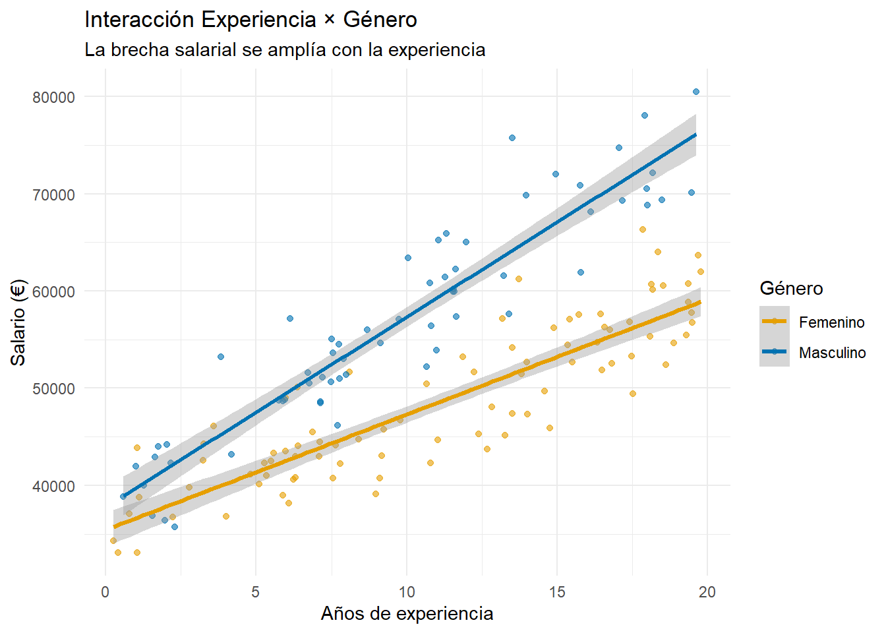
# Calcular brecha por años de experiencia
años_experiencia <- c(0, 5, 10, 15, 20)
brecha_por_año <- coef_mixta[3] + coef_mixta[4] * años_experiencia
tabla_brecha <- data.frame(
Experiencia = años_experiencia,
Brecha_Salarial = round(brecha_por_año, 0)
)
kable(tabla_brecha, caption = "Evolución de la brecha salarial de género")| Experiencia | Brecha_Salarial |
|---|---|
| 0 | 2349 |
| 5 | 6188 |
| 10 | 10028 |
| 15 | 13867 |
| 20 | 17706 |
Parte 7: Ejercicios Prácticos
Ejercicio 1: Análisis Completo de Transformaciones
# Dataset con múltiples problemas
set.seed(999)
n <- 180
# Variables con diferentes necesidades de transformación
superficie <- runif(n, 50, 300) # metros cuadrados
antiguedad <- sample(1:50, n, replace = TRUE) # años
zona <- sample(c("Centro", "Periferia", "Suburbios"), n, replace = TRUE, prob = c(0.3, 0.4, 0.3))
# Precio con relación compleja
precio_base <- 100000
efecto_superficie <- 400 * superficie^0.8 # Rendimientos decrecientes
efecto_antiguedad <- -2000 * log(antiguedad + 1) # Depreciación logarítmica
efecto_zona <- ifelse(zona == "Centro", 50000, ifelse(zona == "Suburbios", 20000, 0))
precio <- precio_base + efecto_superficie + efecto_antiguedad + efecto_zona +
superficie * rnorm(n, 0, 100) # Heterocedasticidad
datos_ejercicio <- data.frame(superficie, antiguedad, zona, precio)
cat("=== EJERCICIO 1: ANÁLISIS COMPLETO ===\n")=== EJERCICIO 1: ANÁLISIS COMPLETO ===cat("Tareas a realizar:\n")Tareas a realizar:cat("1. Analizar la distribución de las variables\n")1. Analizar la distribución de las variablescat("2. Detectar problemas en un modelo básico\n")2. Detectar problemas en un modelo básicocat("3. Aplicar transformaciones apropiadas\n")3. Aplicar transformaciones apropiadascat("4. Comparar modelos antes y después\n")4. Comparar modelos antes y despuéscat("5. Interpretar coeficientes transformados\n\n")5. Interpretar coeficientes transformados# Modelo básico para diagnóstico
modelo_basico <- lm(precio ~ superficie + antiguedad + zona, data = datos_ejercicio)
# Diagnósticos básicos
cat("R² modelo básico:", round(summary(modelo_basico)$r.squared, 4), "\n")R² modelo básico: 0.5385 test_hetero(modelo_basico, "Modelo Básico")=== Test de Breusch-Pagan: Modelo Básico ===
Chi-square: 17.6159
p-valor: 0
Conclusión: Hay evidencia de heterocedasticidadtest_reset(modelo_basico, "Modelo Básico")=== Test RESET: Modelo Básico ===
F-statistic: 1.0685
p-valor: 0.3458
Conclusión: La forma funcional es adecuadacat("Tu análisis aquí...\n")Tu análisis aquí...Ejercicio 2: Variables Categóricas Complejas
# Dataset con variables categóricas de diferentes tipos
set.seed(888)
n <- 200
datos_cat_ejercicio <- data.frame(
# Variable ordinal
calificacion_credito = sample(c("D", "C", "B", "A", "AA"), n, replace = TRUE,
prob = c(0.1, 0.2, 0.4, 0.25, 0.05)),
# Variable nominal con muchas categorías
sector = sample(c("Tecnología", "Finanzas", "Salud", "Educación", "Manufactura", "Servicios"),
n, replace = TRUE),
# Variable binaria
tipo_empresa = sample(c("Pública", "Privada"), n, replace = TRUE, prob = c(0.3, 0.7)),
# Variables numéricas
empleados = round(runif(n, 10, 1000)),
ingresos = runif(n, 100000, 10000000)
)
cat("=== EJERCICIO 2: VARIABLES CATEGÓRICAS ===\n")=== EJERCICIO 2: VARIABLES CATEGÓRICAS ===cat("Tareas a realizar:\n")Tareas a realizar:cat("1. Decidir método de codificación para cada variable categórica\n")1. Decidir método de codificación para cada variable categóricacat("2. Implementar las codificaciones apropiadas\n")2. Implementar las codificaciones apropiadascat("3. Comparar diferentes enfoques\n")3. Comparar diferentes enfoquescat("4. Crear un modelo final optimizado\n\n")4. Crear un modelo final optimizado# Mostrar distribuciones
cat("Distribución de variables categóricas:\n")Distribución de variables categóricas:sapply(datos_cat_ejercicio[,1:3], table)$calificacion_credito
A AA B C D
41 7 81 47 24
$sector
Educación Finanzas Manufactura Salud Servicios Tecnología
35 26 30 38 35 36
$tipo_empresa
Privada Pública
152 48 cat("\nTu análisis aquí...\n")
Tu análisis aquí...Ejercicio 3: Interacciones en Contexto Real
# Datos de marketing con múltiples interacciones potenciales
set.seed(777)
n <- 250
marketing_data <- data.frame(
precio = runif(n, 20, 100),
descuento = runif(n, 0, 0.3),
calidad = runif(n, 1, 5),
temporada = sample(c("Alta", "Media", "Baja"), n, replace = TRUE, prob = c(0.3, 0.4, 0.3)),
competencia = runif(n, 1, 10),
canal = sample(c("Online", "Tienda", "Híbrido"), n, replace = TRUE)
)
# Variable respuesta con interacciones complejas
# Interacción precio-descuento, calidad-temporada, etc.
marketing_data$ventas <- 100 +
(-2 * marketing_data$precio) +
(500 * marketing_data$descuento) +
(30 * marketing_data$calidad) +
# Interacciones
(1.5 * marketing_data$precio * marketing_data$descuento) + # Descuento mitiga sensibilidad precio
(ifelse(marketing_data$temporada == "Alta", 20, 0) * marketing_data$calidad) + # Calidad importa más en temporada alta
(-5 * marketing_data$competencia) +
rnorm(n, 0, 30)
cat("=== EJERCICIO 3: INTERACCIONES COMPLEJAS ===\n")=== EJERCICIO 3: INTERACCIONES COMPLEJAS ===cat("Tareas a realizar:\n")Tareas a realizar:cat("1. Identificar potenciales interacciones usando conocimiento del dominio\n")1. Identificar potenciales interacciones usando conocimiento del dominiocat("2. Explorar visualmente las interacciones\n")2. Explorar visualmente las interaccionescat("3. Probar diferentes especificaciones de modelo\n")3. Probar diferentes especificaciones de modelocat("4. Validar las interacciones estadísticamente\n")4. Validar las interacciones estadísticamentecat("5. Interpretar el modelo final en términos de negocio\n\n")5. Interpretar el modelo final en términos de negociocat("Tu análisis aquí...\n")Tu análisis aquí...Parte 8: Ingeniería de Características Avanzada
Creación de Ratios y Métricas Compuestas
# Dataset financiero para ingeniería de características
set.seed(666)
n <- 150
empresa_data <- data.frame(
ingresos = runif(n, 1000000, 50000000),
gastos = runif(n, 800000, 45000000),
activos = runif(n, 2000000, 100000000),
deuda = runif(n, 500000, 30000000),
empleados = round(runif(n, 50, 2000)),
años_mercado = round(runif(n, 1, 30))
)
# Crear características derivadas
empresa_data <- empresa_data %>%
mutate(
# Ratios financieros
margen_beneficio = (ingresos - gastos) / ingresos,
ratio_deuda = deuda / activos,
productividad = ingresos / empleados,
# Métricas de eficiencia
roi_empleados = (ingresos - gastos) / empleados,
crecimiento_anualizado = ingresos / años_mercado,
# Categorización de empresas
tamaño = case_when(
empleados < 100 ~ "Pequeña",
empleados < 500 ~ "Mediana",
TRUE ~ "Grande"
),
# Índices compuestos
salud_financiera = (margen_beneficio * 0.4) + ((1 - ratio_deuda) * 0.3) +
(pmin(productividad/median(productividad), 2) * 0.3),
# Variables de interacción
experiencia_tamaño = años_mercado * log(empleados),
# Transformaciones
log_ingresos = log(ingresos),
sqrt_empleados = sqrt(empleados)
)
# Variable respuesta: valoración de empresa
empresa_data$valoracion <-
2 * empresa_data$log_ingresos +
100000 * empresa_data$margen_beneficio +
50000 * empresa_data$salud_financiera +
1000 * empresa_data$experiencia_tamaño +
rnorm(n, 0, 500000)
# Análisis de las características creadas
cat("=== INGENIERÍA DE CARACTERÍSTICAS ===\n")=== INGENIERÍA DE CARACTERÍSTICAS ===cat("Características creadas:\n")Características creadas:nuevas_vars <- c("margen_beneficio", "ratio_deuda", "productividad", "roi_empleados",
"salud_financiera", "experiencia_tamaño")
for(var in nuevas_vars) {
cat("-", var, ": rango [", round(min(empresa_data[[var]], na.rm = TRUE), 3),
",", round(max(empresa_data[[var]], na.rm = TRUE), 3), "]\n")
}- margen_beneficio : rango [ -14.132 , 0.953 ]
- ratio_deuda : rango [ 0.011 , 11.8 ]
- productividad : rango [ 1759.799 , 449755.3 ]
- roi_empleados : rango [ -596799.6 , 150903.9 ]
- salud_financiera : rango [ -7.331 , 1.168 ]
- experiencia_tamaño : rango [ 4.7 , 220.669 ]# Matriz de correlaciones para nuevas variables
cor_nuevas <- cor(empresa_data[, c(nuevas_vars, "valoracion")], use = "complete.obs")
corrplot(cor_nuevas, method = "color", addCoef.col = "black", number.cex = 0.7,
title = "Correlaciones - Variables Engineered", mar = c(0,0,1,0))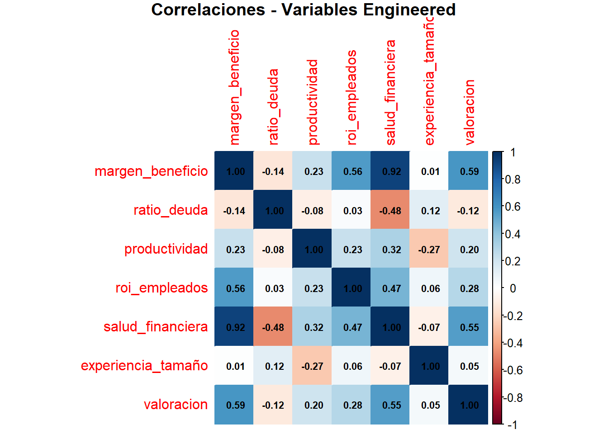
Modelo con Variables Engineered
# Modelo básico con variables originales
modelo_original <- lm(valoracion ~ ingresos + gastos + activos + deuda + empleados + años_mercado,
data = empresa_data)
# Modelo con variables engineered
modelo_engineered <- lm(valoracion ~ log_ingresos + margen_beneficio + ratio_deuda +
productividad + salud_financiera + experiencia_tamaño,
data = empresa_data)
# Comparar modelos
cat("=== COMPARACIÓN MODELOS ===\n")=== COMPARACIÓN MODELOS ===cat("Modelo original:\n")Modelo original:cat(" R²:", round(summary(modelo_original)$r.squared, 4), "\n") R²: 0.189 cat(" RMSE:", round(sqrt(mean(residuals(modelo_original)^2)), 0), "\n") RMSE: 542765 cat("Modelo engineered:\n")Modelo engineered:cat(" R²:", round(summary(modelo_engineered)$r.squared, 4), "\n") R²: 0.3608 cat(" RMSE:", round(sqrt(mean(residuals(modelo_engineered)^2)), 0), "\n") RMSE: 481860 # Interpretación del modelo engineered
summary(modelo_engineered)
Call:
lm(formula = valoracion ~ log_ingresos + margen_beneficio + ratio_deuda +
productividad + salud_financiera + experiencia_tamaño, data = empresa_data)
Residuals:
Min 1Q Median 3Q Max
-1039147 -360415 10330 315865 1183095
Coefficients:
Estimate Std. Error t value Pr(>|t|)
(Intercept) -7.399e+05 1.484e+06 -0.498 0.6189
log_ingresos 6.013e+04 9.441e+04 0.637 0.5252
margen_beneficio 2.785e+05 1.290e+05 2.160 0.0325 *
ratio_deuda -1.236e+05 1.020e+05 -1.212 0.2277
productividad 1.391e+00 9.109e-01 1.527 0.1289
salud_financiera -3.465e+05 3.257e+05 -1.064 0.2891
experiencia_tamaño 6.026e+02 7.372e+02 0.817 0.4150
---
Signif. codes: 0 '***' 0.001 '**' 0.01 '*' 0.05 '.' 0.1 ' ' 1
Residual standard error: 493500 on 143 degrees of freedom
Multiple R-squared: 0.3608, Adjusted R-squared: 0.334
F-statistic: 13.45 on 6 and 143 DF, p-value: 4.617e-12cat("\n=== INTERPRETACIÓN BUSINESS ===\n")
=== INTERPRETACIÓN BUSINESS ===coef_eng <- coef(modelo_engineered)
cat("Logaritmo de ingresos:", round(coef_eng[2], 0), "→ Elasticidad de valoración respecto a ingresos\n")Logaritmo de ingresos: 60129 → Elasticidad de valoración respecto a ingresoscat("Margen de beneficio:", round(coef_eng[3], 0), "→ Valoración adicional por punto de margen\n")Margen de beneficio: 278513 → Valoración adicional por punto de margencat("Salud financiera:", round(coef_eng[6], 0), "→ Premio por buena gestión financiera\n")Salud financiera: -346490 → Premio por buena gestión financieraParte 9: Conceptos Clave para Recordar
Guía de Decisión para Transformaciones
ImportantCuándo usar cada transformación
Transformación Logarítmica:
- Relaciones exponenciales o multiplicativas
- Heterocedasticidad proporcional al nivel
- Variables con rango muy amplio
- Interpretación en términos de cambios porcentuales
Transformación Raíz Cuadrada:
- Datos de conteo (distribución Poisson)
- Varianza proporcional a la media
- Estabilización de varianza moderada
Transformación Box-Cox:
- Cuando no está claro qué transformación usar
- Optimización automática del parámetro
- Solo para datos estrictamente positivos
Transformación Yeo-Johnson:
- Extensión de Box-Cox para datos con negativos o ceros
- Mayor flexibilidad en el rango de datos
Estrategias de Codificación
NoteVariables Categóricas
One-Hot Encoding:
- Variables nominales (sin orden natural)
- Cuando cada categoría debe tratarse independientemente
- Facilita interpretación individual de efectos
Codificación Ordinal:
- Variables con orden natural claro
- Cuando el orden es relevante para el fenómeno
- Reduce dimensionalidad y mantiene información ordinal
Consideraciones:
- Siempre verificar que el método preserve la naturaleza de la variable
- Evitar la “dummy variable trap” en modelos lineales
- Considerar el impacto en la interpretación
Principios para Interacciones
WarningMejores Prácticas
Identificación:
- Justificación teórica antes que búsqueda automática
- Exploración visual sistemática
- Validación estadística formal
Interpretación:
- Los efectos principales cambian de significado
- Calcular efectos marginales en diferentes niveles
- Usar visualizaciones para comunicar efectos complejos
Limitaciones:
- Incremento exponencial de complejidad
- Riesgo de sobreajuste con múltiples interacciones
- Problemas de multicolinealidad
Workflow de Ingeniería de Características
- Diagnóstico: Identificar problemas específicos
- Transformación: Aplicar soluciones apropiadas
- Codificación: Tratar variables categóricas correctamente
- Interacciones: Explorar efectos combinados
- Validación: Verificar mejoras en datos independientes
- Interpretación: Mantener significado business
Próximo Laboratorio
En el Laboratorio 4 exploraremos técnicas de selección de variables y regularización, incluyendo métodos como Ridge, Lasso y Elastic Net para manejar modelos con muchas características.